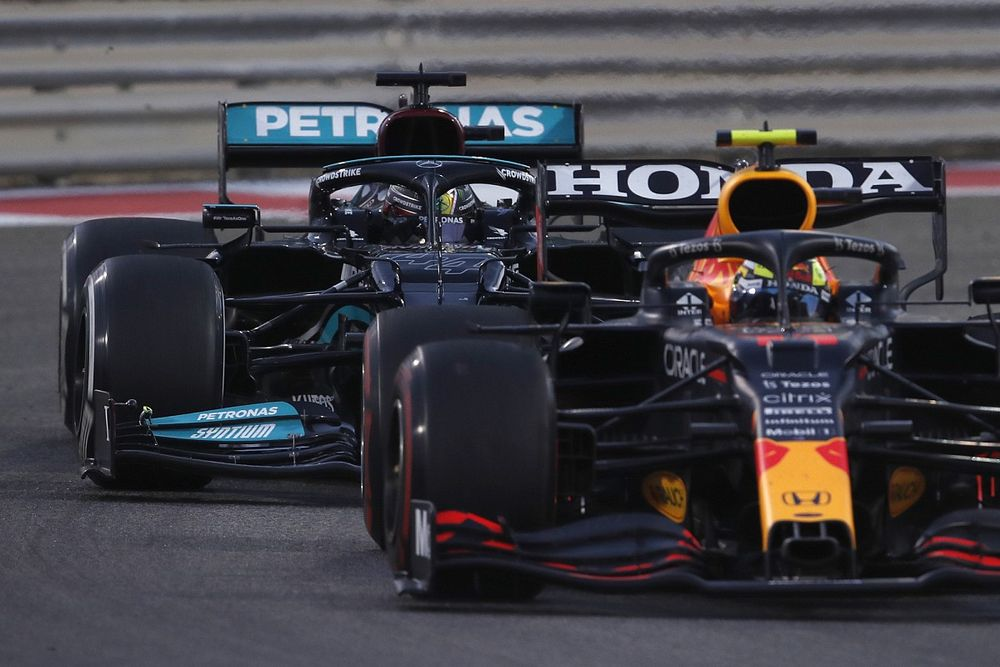
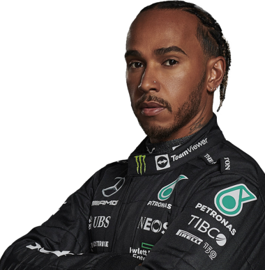

Inleiding
Ongeveer drie jaar geleden opende een goede vriend voor mij de poort naar de opwindende wereld van de
Formule 1. Wat begon als een informele kennismaking, groeide al snel uit tot een gepassioneerde fascinatie.
De razendsnelle wagens, de strategische meesterzetten en de onvoorspelbaarheid van elke race deden me al
snel beseffen dat ik een nieuwe passie had gevonden. Sindsdien ben ik trouw blijven kijken naar elke grand
prix, steeds dieper duikend in de geschiedenis en technische nuances van deze spectaculaire sport. Formule 1
is voor mij niet alleen een race, maar een adembenemende symfonie van snelheid, tactiek en pure adrenaline
die ik met plezier beleef en koester.

Lewis Hamilton
Vanaf het moment dat ik begon te kijken, heeft Lewis Hamilton in zijn Mercedes mijn hart gestolen als mijn
favoriete coureur. Zijn ongeëvenaarde vaardigheden op het circuit en zijn toewijding aan de sport hebben me
keer op keer geïnspireerd. Echter, in de schaduw van zijn succes staat een geduchte rivaal: Max Verstappen
van Red Bull Racing. De intense strijd tussen deze twee grootheden heeft mijn liefde voor de sport alleen
maar versterkt. Elke race tussen Hamilton en Verstappen is een episch duel van talent en strategie, waardoor
elke grand prix een adembenemende ervaring wordt.

Max Verstappen
Max Verstappen, de dynamische kracht van Red Bull Racing, heeft mijn bewondering verdiend met zijn gedurfde
rijstijl en vastberadenheid. Zijn vurige concurrentie met Lewis Hamilton voegt een extra dimensie toe aan
elke race, waardoor ik elke grand prix met ingehouden adem beleef. Hoewel Hamilton nog steeds mijn favoriete
coureur is, kan ik niet ontkennen dat Verstappen een onuitwisbare indruk op me heeft achtergelaten met zijn
buitengewone talent en vastberadenheid op het circuit.